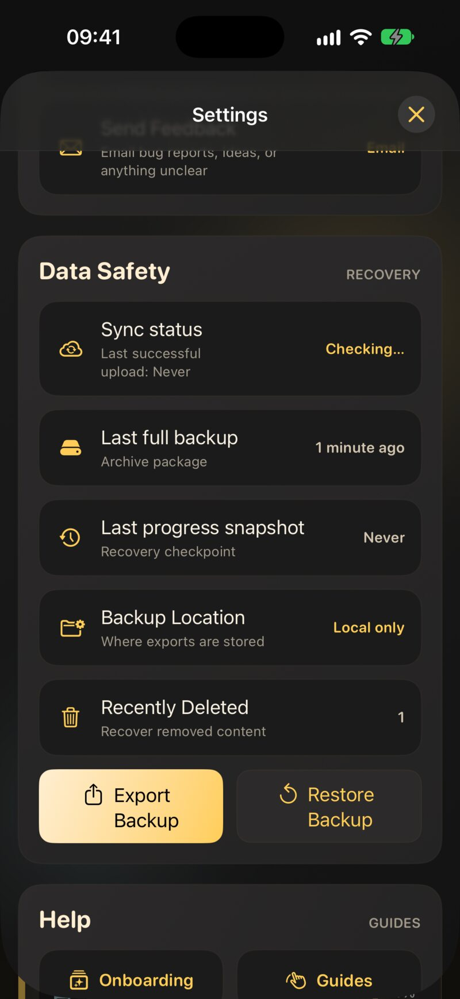
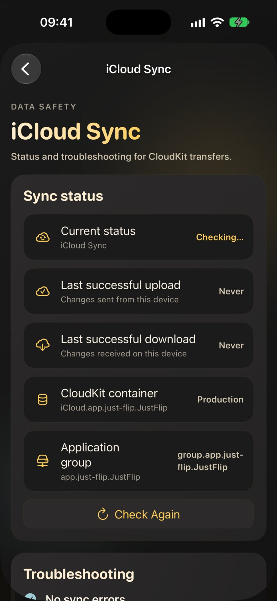
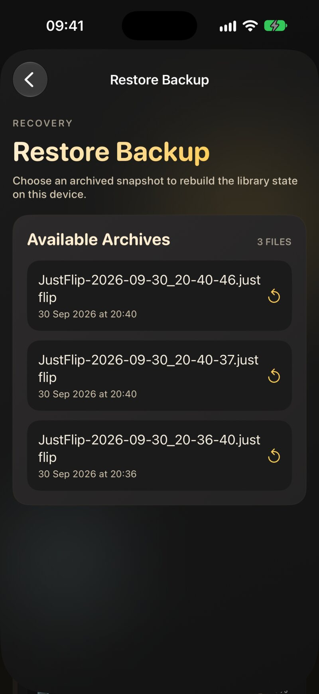
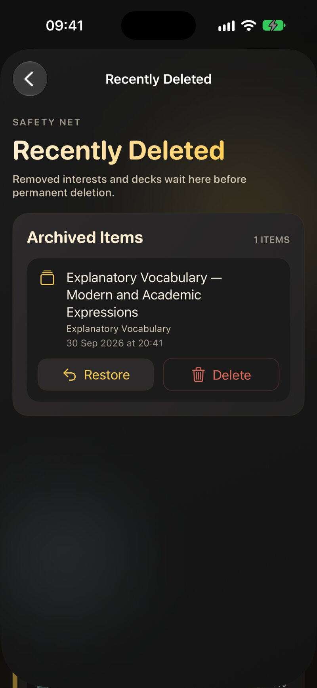

10.1 Three layers of safety
| Layer | What it is | What it protects you from |
|---|---|---|
| 1. iCloud sync | Your library, kept the same on every device | A lost, broken or replaced device |
| 2. Automatic backups | Regular snapshots that JustFlip! takes on its own | Mistakes that sync would copy everywhere |
| 3. Manual export | Archive files you save wherever you like | Everything else, including leaving iCloud |
All three live in Settings › Data Safety. Open Settings from the gear icon at the top of the Interests list and scroll to the Data Safety section.

Sync makes every device match. That includes your mistakes: delete an interest on your iPad and it disappears from your iPhone and Mac within minutes. Sync has no undo of its own. That is exactly why layers 2 and 3 exist.
10.2 iCloud sync
Sync is included for everyone, free and Pro. There is nothing to switch on inside JustFlip!: if your device is signed in to iCloud, your library syncs through your own iCloud account.
10.2.1 What syncs
- Interests, decks and cards, including pictures and sounds
- Your learning progress: every grade, interval, due date and lapse
- Retired and postponed cards, card flags, priorities and progress trackers
- Deletions, including what is waiting in Recently Deleted
Your settings stay on each device: the theme, the text size, voices, reminders, and daily limits such as New cards per day. That lets you have a quiet phone and a busy iPad. Apple Watch gets its cards from your iPhone rather than from iCloud (see Chapter 8).
10.2.2 How it behaves
- Offline first. Everything works without a connection. Your changes are saved on the device straight away and sent when you are back online.
- In the background. There is no sync button. Changes travel on their own, usually within seconds to a few minutes.
- Last change wins. If you edit the same card on two devices before they sync, the later edit is the one that stays.
Install JustFlip! on the new device, sign in with the same Apple Account, and open the app. Your interests appear as they arrive; the empty list says so while it waits. A large library with lots of pictures can take a while on the first sync, so leave the app open on Wi-Fi.
10.3 The sync status
The first row of Data Safety, Sync status, shows the state of iCloud on this device, with the time of the last successful upload underneath.
| Status | What it means |
|---|---|
| Checking… | JustFlip! is asking iCloud whether your account is available |
| Available | Your iCloud account is ready and sync can run |
| Syncing… | Changes are being sent or received right now |
| Unavailable | No iCloud account is available on this device, so nothing syncs |
| Sync failed | iCloud reported an error the last time it tried |
Unavailable and Sync failed are shown in red.
Available only says that your account is ready. It doesn’t promise that every change has already reached iCloud. For that, look at the upload and download times on the iCloud Sync screen.
10.3.1 The iCloud Sync screen
Tap Sync status for the details:
- Current status: the state from the table above.
- Last successful upload and Last successful download: when iCloud last confirmed that changes were sent from, or received on, this device. A local save doesn’t count; only a confirmed transfer does.
- Upload in progress, while one is running.
- Check Again: asks iCloud once more whether your account is available.
- Troubleshooting: the last error iCloud reported, or No sync errors.
- Recent Sync Activity: a log of recent sync events on this device, useful when you contact support.

When a change made on one device never shows up on the other, open this screen on both. If one device’s Last successful upload is older than the change, the problem is on that device: it hasn’t sent it yet. If the upload is recent but the other device’s Last successful download is old, the receiving device hasn’t fetched it yet.
10.4 Automatic backups
JustFlip! backs up your library on its own. You will find two kinds in Data Safety:
| Backup | Row in Data Safety | Contents | Roughly how often | Kept |
|---|---|---|---|---|
| Full backup | Last full backup | One archive with every interest: cards, pictures, sounds and all progress | Weekly | The newest 10 |
| Progress snapshot | Last progress snapshot | Every interest with its progress, without pictures and sounds | Daily | The newest 30 |
On iPhone and iPad the system runs backups in the background, when it decides the moment is right. On the Mac, JustFlip! checks each time you bring the app to the front and catches up on anything overdue. A backup is skipped when nothing has changed since the previous one. When the oldest backup falls out of the “kept” count, it is deleted automatically.
The dates turn red when a backup is overdue: a full backup older than four weeks or a progress snapshot older than four days.
10.4.1 Export Backup: a full backup right now
Export Backup creates a full backup
immediately and adds it to the list, for example before you try
something risky. It writes a file named like
JustFlip-2026-09-30_14-05-12.justflip.
10.4.2 Where backups are kept
The Backup Location row shows where your backups are stored:
- iCloud Drive: the backups are kept in JustFlip!’s iCloud Drive storage, apart from sync. A sync problem or a synced deletion doesn’t touch them.
- Local only: iCloud Drive isn’t available, so backups stay on this device. Tap the row to see why: Not signed in to iCloud, iCloud Drive is disabled or Your iCloud storage quota is full.
“Local storage works, but it will not travel across devices or survive an app removal,” as the app itself warns. If Backup Location says Local only, deleting JustFlip! deletes its backups too. Keep an exported archive somewhere safe as well.
10.5 Restoring a backup
Tap Restore Backup in Data Safety to see Available Archives, newest first, each with its file name and date. Tap one to restore it. A message confirms when it is done: “Restore completed. Interests have been merged.”

A restore merges; it never wipes your library first:
- Interests, decks and cards in the backup are brought back. Anything that was created after the backup stays as it is.
- For each card in the backup, the schedule is set back to what it was when the backup was taken: learning stage, interval, due date, ease and lapses.
- Review history is combined. Reviews you did after the backup are kept, and restoring the same backup twice doesn’t duplicate anything.
There is no confirmation step: tapping a backup restores it. Pick the right date before you touch the list. And remember that the cards in it go back to their schedule at that time, so restoring an old backup to fix one deck also turns back the clock for every other card it contains.
A restore writes a lot of changes at once, and every other device has to receive them. Keep JustFlip! open on the device you restored, on Wi-Fi, until its Last successful upload is recent. Then open JustFlip! on your other devices and give them a few minutes before you start reviewing there.
10.6 Deleting, and Recently Deleted
When you delete an interest, a deck or a card, it is gone straight away, on every device. Before you delete anything you might want back, choose Export archive from the interest’s context menu. The archive keeps its decks, cards and progress, and you can import it again later. A card you only want out of your reviews is better retired than deleted (Chapter 2).
Settings › Data Safety › Recently Deleted holds interests and decks that JustFlip! set aside for you, such as the empty copy left behind after two interests or decks were merged. The row shows how many items are waiting, or Empty.

Each item shows its name, the interest it belonged to, and when it was set aside. Two buttons:
- Restore brings it back with all its cards and progress.
- Delete removes it permanently, right away. This can’t be undone.
After 30 days, JustFlip! permanently deletes what is left.
10.7 Exporting an archive
The third layer is yours to control: an archive file you can keep in Files, on a drive, or in any cloud service.
| You want to… | Do this | You get |
|---|---|---|
| Keep or move one interest, with progress | Long-press the interest › Export archive | Name.flashcards.zip |
| Do the same on a Mac | Select the interest › File › Export Interest… (⇧⌘E) | Name.flashcards.zip |
| Back up the whole library now | Settings › Data Safety › Export Backup | a .justflip file among your backups |
| Analyse your numbers | Long-press › Export statistics | CSV or JSON (Chapter 9) |
An interest archive contains every deck and card of the interest, its pictures and sounds, and your learning progress. To bring it back, open the file with JustFlip! from Files, the share sheet or AirDrop, or on the Mac drop it on the window or use File › Import Interest Archive…. Importing works like a restore: it merges, so the same file can be opened twice without creating duplicates. Chapter 5 covers importing in detail.
Export archive always includes your learning progress. That is what you want for a backup. When you send the file to a friend, though, your due dates and history travel with it.
10.8 Duplicate interests from two devices
Interest names are unique in your library, ignoring letter case. But if two devices are both offline and you create an interest with the same name on each, for example “Spanish” on the iPhone on a flight and “spanish” on the iPad at home, both copies exist once the devices sync again.
JustFlip! notices this and merges them automatically: the decks from both copies are gathered under one interest, and you see a short message such as “Merged duplicate copies of ‘Spanish’ created on another device”. Names are compared without regard to letter case, accents and extra spaces. Every device picks the same surviving copy, so they all end up with the same single interest, and a deck that arrives later for the merged-away copy still finds its way to the right place.
10.9 Troubleshooting sync
When a change doesn’t show up on another device, go through this list in order. Most problems end at step 3 or 4.
- Give it a few minutes. Sync is not instant. Keep JustFlip! open on both devices for a minute or two.
- Check the status. Open Settings › Data Safety › Sync status on both devices. Unavailable means no iCloud account is available; Sync failed shows the error under Troubleshooting. Tap Check Again after fixing anything.
- Same Apple Account. Both devices must be signed in with the same Apple Account. In the system Settings, tap your name at the top to check.
- iCloud is on for JustFlip! In the system Settings, go to your name › iCloud and make sure iCloud Drive is on and JustFlip! is allowed to use iCloud.
- Enough iCloud storage. A full iCloud account stops sync. Check under your name › iCloud › Manage Storage, and free up space if needed.
- A working connection. Make sure the device is online.
- Compare upload and download times on the iCloud Sync screen, as described in The sync status, to find which device is behind.
- Restart and update. Close and reopen JustFlip!, restart the device, and install any JustFlip! update. As a last step, sign out of iCloud and back in.
- Still stuck? Use Send Feedback in Settings and mention what the Recent Sync Activity log shows.
Before you delete and reinstall the app, or sign out of iCloud, tap Export Backup and export an archive of your most important interests. Then, whatever happens next, your progress is safe.